Dimensionamiento de conductores
Generalidades
El dimensionamiento de conductores implica determinar la sección de los conductores en una instalación eléctrica a corriente nominal, como también, los dispositivos de protección necesarios para su manejo. Las etapas que se deben considerar son:
- Definir la tensión nominal.
- Determinar la corriente que circulara en las lineas.
- Elegir el tipo de conductor y la forma de instalación.
- Determinar la sección utilizando el criterio de “capacidad de conducción de corriente”.
- Verificar la sección por el criterio de “corriente de cortocircuito”.
- Verificar la sección por el criterio de “caída de tensión”.
- Verificar el cumplimiento de las secciones mínimas exigidas.
Tensión nominal
La tensión nominal debe ser la adecuada para las condiciones de operación de la red en la que se realiza la instalación
- U0: tensión nominal a frecuencia industrial entre el conductor y el conductor de protección a tierra o pantalla metálica para la cual está diseñado el cable.
- U: tensión nominal a frecuencia industrial entre los conductores para la cual está diseñado el cable.
- Um: tensión máxima para el equipamiento (ver IRAM 2211-Parte I).
Para cada valor de la tensión U, los valores correspondientes de Uo se definen en función de las características de la red, de la forma siguiente:
Categoría I: Comprenderá las redes en que, en el caso de falla de una fase contra tierra, el cable es separado del servicio en un tiempo no mayor de 1 hora.
Cuando se utilicen cables con conductores aislados, individualmente apantallado, podrán ser toleradas duraciones más prolongadas, pero en ningún caso dichos períodos serán mayores de 8 hs.
Se preverá que estas situaciones anormales no se presenten frecuentemente.
Categoría II: Comprenderá todas las redes que no están incluidas en la categoría anterior.
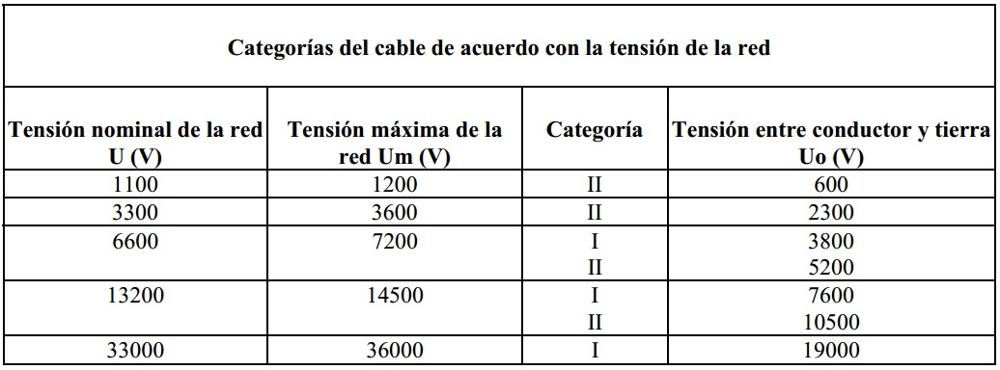
Nota 1: Para redes cuya tensión máxima permanente no esté incluida en la tabla, se considerará el valor inmediato superior.
Nota 2: Si el cable es usado en un sistema donde una falla a tierra no es eliminada en forma automática y rápida (por ej. sistemas con neutro aislado), el esfuerzo dieléctrico adicional sobre la aislación del cable durante la falla a tierra, reduce en cierto grado la vida útil de la aislación. Por ello, si el sistema está previsto para operar regularmente con una falla a tierra, se deberá adoptar la categoría II
Corriente de proyecto:
Es la corriente máxima permanente considerando las potencias nominales de las cargas aplicadas. En caso de existir fluctuaciones de carga importantes, se deberá disponer del diagrama de cargas correspondiente, o sea, la curva de variación de la corriente en función del tiempo.
Cálculo de la capacidad de conducción de corriente
La corriente transportada por un conductor siempre produce pérdidas de energía térmica por efecto Joule.
Esa energía se emplea, en parte, para elevar la temperatura del conductor, y el resto se disipa hacia el medio ambiente como calor. Luego de circular corriente durante cierto tiempo, la temperatura del conductor deja de crecer, produciéndose el "equilibrio térmico" del mismo.
La corriente que circulando continuamente por el conductor, produce el equilibrio térmico a la temperatura máxima de servicio continuo, se denomina "capacidad de conducción de corriente", Iz.
Una vez conocida esta, se determina la sección por el criterio de "intensidad máxima admisible por calentamiento" o bien, dada la complejidad de estos cálculos, se recurre a las tablas incluidas en las hojas técnicas proporcionadas por los fabricantes de cables.
Las mismas están referidas a la tensión nominal y a los casos de instalación más corrientes: la instalación en cañerías embutidas para los cables unipolares y al aire o en instalación enterrada para los subterráneos, en las siguientes condiciones:
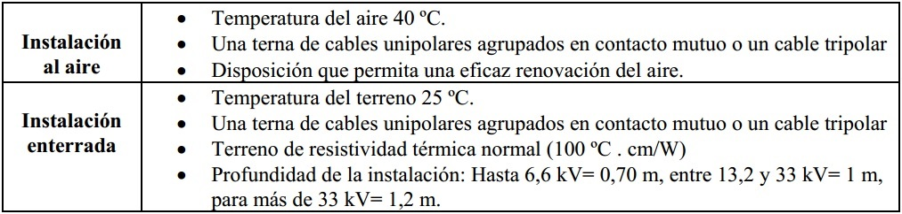
En el caso de otras disposiciones o que se deba instalar a lo largo del recorrido previsto más de un cable tripolar o más de una terna de cables unipolares, es preciso considerar el calentamiento mutuo y reducir la intensidad admisible de los cables mediante la aplicación de coeficientes de reducción, cuyos valores se encuentran tabulados
Uso de tablas
Como se indicaba anteriormente, la complejidad de los cálculos ha popularizado el empleo de tablas de dimensionamiento, provistas por los fabricantes de conductores o las incluídas en el Reglamento de Instalaciones Eléctricas en Inmuebles de la A.E.A.
Por ejemplo, para cables en cañerías embutidas o a la vista, Pirelli Cables fabrica la línea Pirastic Ecoplus. Se trata de cables unipolares aislados en PVC según norma IRAM 2183, cuyos datos principales son:
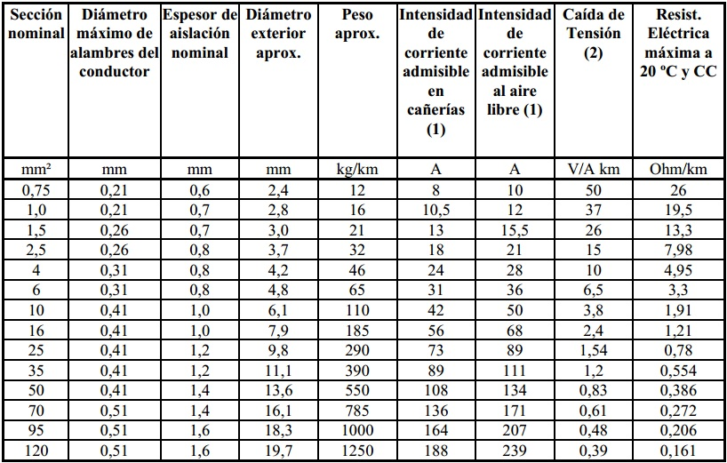
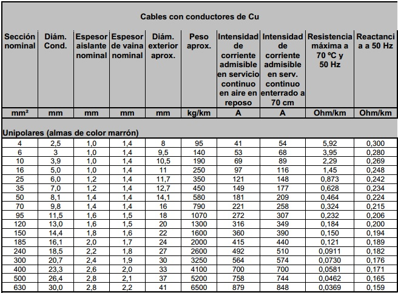
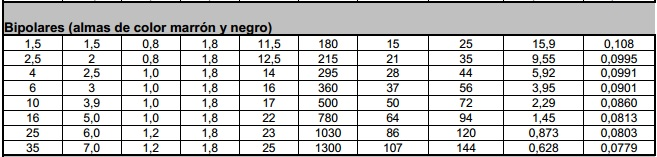
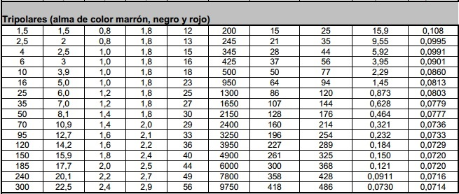
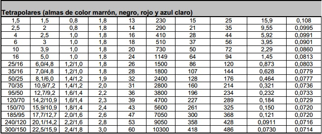
(1) 3 cables en cañerías embutidas en mampostería o en aire libre dispuestos en plano, temperatura ambiente 30 ºC (no se considera el de protección).
(2) Cables en contacto en corriente alterna monofásica 50 Hz, cos ϕ =0,8 (no se considera el de protección).
A modo orientativo, a continuación se presentan algunos valores de los coeficientes de corrección de la corriente admisible:
- Para dos cables en cañería los valores de intensidad admisible se deberán multiplicar por 1,10; si los cables instalados son de 4 a 6 multiplicar por 0,8 y si son de 7 a 9 cables el coeficiente de multiplicación será 0,7.
- En aire libre multiplicar por 1,12.
- Para temperatura ambiente de 40 ºC multiplicar por 0,89
- Cables en aire: se considera tres cables unipolares en un plano sobre bandeja y distanciados un diámetro o un cable multipolar sólo, en un ambiente a 40 °C.
- Cables enterrados: tres cables unipolares colocados en un plano horizontal y distanciados 7 cm o un cable multipolar solo, enterrado a 0,70 m de profundidad en un terreno a 25 °C y 100 °C . cm/W de resistividad térmica.
- Para otras condiciones de instalación emplear los coeficientes de corrección de la corriente admisible que correspondan.
Por ejemplo, para cables de uso subterráneo de BT, Pirelli Cables elabora la línea SINTENAX VIPER (bajo norma IRAM 2178) cuyos datos principales son:
Coeficientes de reducción de la corriente admisible por temperaturas diferentes a las de referencia
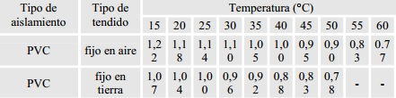
Coeficientes de reducción de la corriente admisible de acuerdo a la forma de tendido
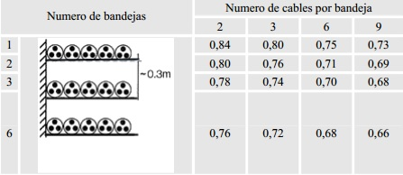
Cables instalados al aire en bandejas continuas en contacto con la pared y entre si y con las bandejas separadas mas de 20 cm.
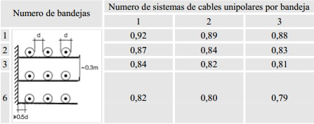
En bandejas continuas, distanciados de la pared mas de 20 mm. y separados entre si un diámetro.
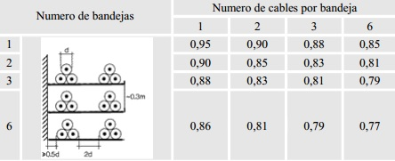
En bandejas continuas, distanciados de la pared mas de 20 mm. y separados entre si dos diámetros.
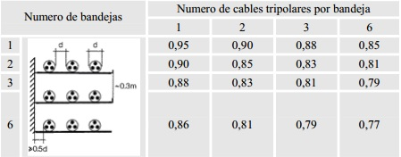
En bandejas continuas, distanciados de la pared mas de 20 mm. y separados entre si un diámetro.
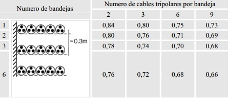
En bandejas perforadas, en contacto entre sí.
Verificación de la corriente de cortocircuito
Se debe verificar la viabilidad de la sección calculada de acuerdo a las secciones admisibles en cortocircuito. Las mismas surgen de las tablas de los fabricantes.
Verificación de la caída de tensión
La caída de tensión se origina porque el conductor presenta una resistencia al pasaje de la corriente que es función del material, la longitud y la sección; por ello, la sección calculada debe verificarse por caída de tensión en la línea, en base a las siguientes fórmulas aproximadas:
Para circuitos monofásicos:
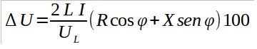
Para circuitos trifásicos:
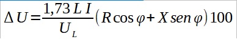
Donde:
- ΔU es la caída de tensión en %.
- Uf es la tensión de fase (V).
- UL es la tensión de línea (V).
- L es la longitud del circuito (km).
- I es la intensidad de corriente de fase del tramo del circuito (A).
- R es la resistencia del conductor (ohm / km) en C.A. a la temperatura de servicio.
- X es la reactancia del conductor (ohm / km).
- cos ϕ es el factor de potencia de la instalación.
La caída de tensión provocada por el pasaje de corriente en los conductores de un circuito debe mantenerse dentro de los límites prefijados por las normas de aplicación, a fin de no perjudicar el funcionamiento de los equipos alimentados por los mismos. La caída de tensión se considera entre el origen de la instalación y el último punto de utilización.
Según la reglamentación de la Asociación Electrotécnica Argentina, las caídas máximas admisibles son:
- Circuitos de alumbrado: ΔU = 3%
- Circuitos fuerza motriz: ΔU = 5 % (en régimen)
- ΔU =15 % (en arranque), aunque se estima conveniente limitarlo al 10%.
- Circuitos alimentados en MT: ΔU = 7 %
La caída de tensión se debe calcular considerando la alimentación de todos los aparatos susceptibles de funcionar simultáneamente.
Cabe aclarar que la AEA no es taxativa respecto al tramo total de cálculo de la caída de tensión, generalmente se interpreta que basta con verificar desde la acometida hasta el tablero de usuario, tablero de ascensor, tablero de bomba, etcétera.
A los efectos prácticos se debe considerar el valor de la reactancia sólo para conductores de sección mayor a 25 mm²; el cos ϕ puede tomarse igual a 0,9 en primera aproximación.
Para cables unipolares de simple vaina (IRAM 2183) los valores aproximados de resistencia efectiva a 70 °C y 50 Hz, considerando una separación del orden de un diámetro de conductor entre ellos, son los siguientes:
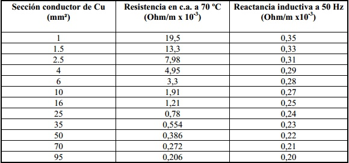
Verificación de las secciones mínimas exigidas
De acuerdo a la ubicación de los diferentes circuitos, el Reglamento de la AEA establece las siguientes secciones mínimas (para conductores de cobre)
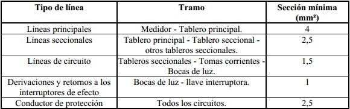